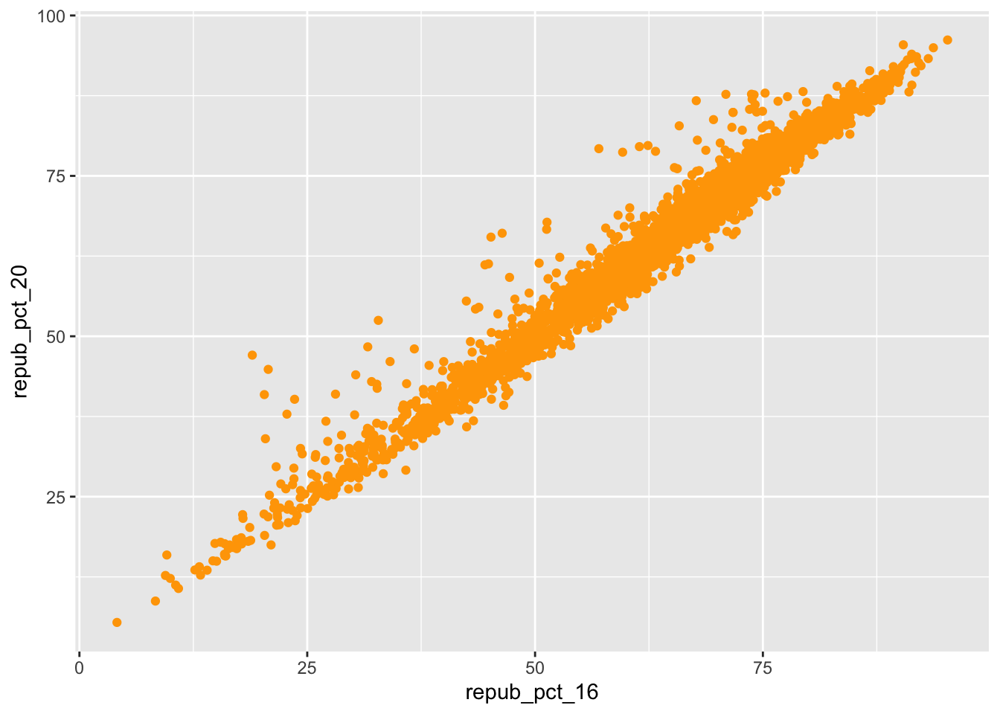
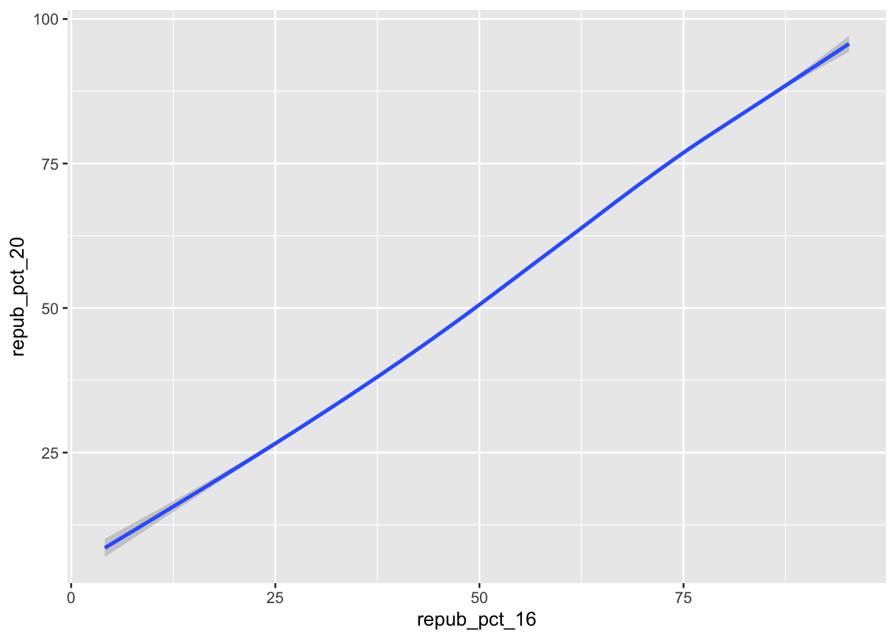
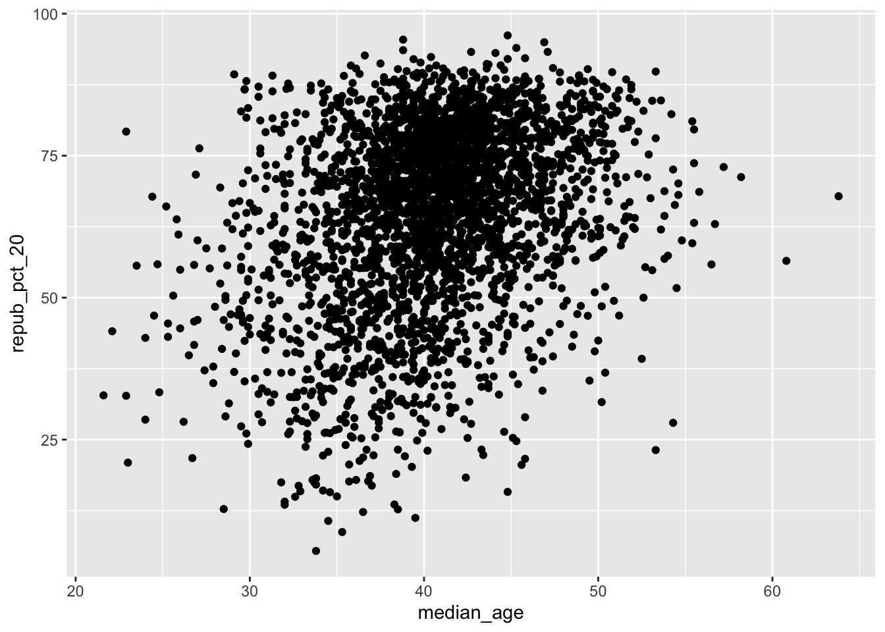
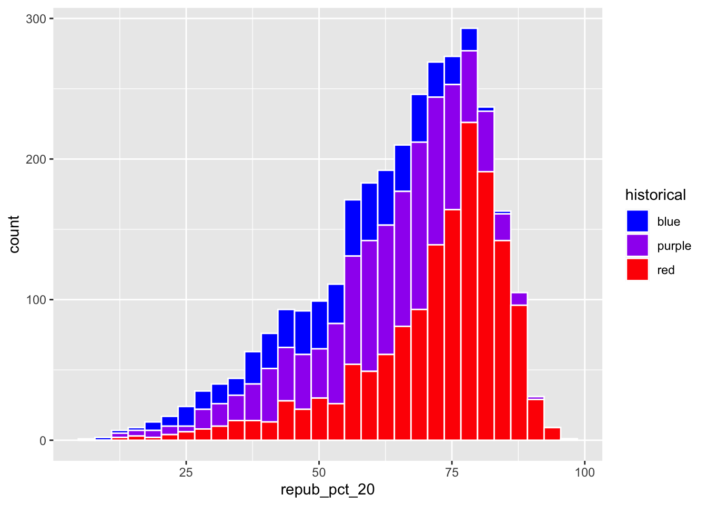

# Set up the plotting frame# How does this differ than the frame for our histogram of repub_pct_20 alone?ggplot(elections, aes(y = repub_pct_20, x = repub_pct_16))
# Add a layer of points for each county# Take note of the geom!ggplot(elections, aes(y = repub_pct_20, x = repub_pct_16)) +geom_point()
# Change the shape of the points# What happens if you change the shape to another number?ggplot(elections, aes(y = repub_pct_20, x = repub_pct_16)) +geom_point(shape =4)
# YOU TRY: Modify the code to make the points "orange"# NOTE: Try to anticipate if "color" or "fill" will be useful here. Then try both.ggplot(elections, aes(y = repub_pct_20, x = repub_pct_16)) +geom_point(color ="orange")

Exercise 3: Reflect Summarize the relationship between the Republican support in 2020 and 2016. Be sure to comment on:
the strength of the relationship (weak/moderate/strong) the direction of the relationship (positive/negative) outliers (in what state do counties deviate from the national trend? Any ideas why this might be the case?)
Republican support in 2020 and 2016 have a strong positive correlation. There are
Exercise 4:
ggplot(elections, aes(y = repub_pct_20, x = repub_pct_16)) +geom_point() +geom_smooth()
`geom_smooth()` using method = 'gam' and formula = 'y ~ s(x, bs = "cs")'
# Construct a new plot that contains the model smooth but does not include the individual point glyphs.ggplot(elections, aes(y = repub_pct_20, x = repub_pct_16)) +geom_smooth()
`geom_smooth()` using method = 'gam' and formula = 'y ~ s(x, bs = "cs")'

#By default, geom_smooth() adds a smooth, localized model line. To examine the “best” linear model, we can specify method = "lm". It’s pretty similar in this example!ggplot(elections, aes(y = repub_pct_20, x = repub_pct_16)) +geom_point() +geom_smooth(method ="lm")
`geom_smooth()` using formula = 'y ~ x'
Exercise 5: Your Turn To examine how the 2020 results are related to some county demographics, construct scatterplots of repub_pct_20 vs median_rent, and repub_pct_20 vs median_age. Summarize the relationship between these two variables and comment on which is the better predictor of repub_pct_20, median_rent or median_age.
# Scatterplot of repub_pct_20 vs median_rentggplot(elections, aes(x=median_rent, y=repub_pct_20)) +geom_point()
# Scatterplot of repub_pct_20 vs median_ageggplot(elections, aes(x=median_age, y=repub_pct_20)) +geom_point()

Exercise 6: A Sad Scatterplot Next, let’s explore the relationship between a county’s 2020 Republican support repub_pct_20 and the historical political trends in its state. In this case repub_pct_20 is quantitative, but historical is categorical. Explain why a scatterplot might not be an effective visualization for exploring this relationship. (What questions does / doesn’t it help answer?)
ggplot(elections, aes(y = repub_pct_20, x = historical)) +geom_point()
Exercise 7: Quantitative vs Categorical – Violins & Boxes Though the above scatterplot did group the counties by historical category, it’s nearly impossible to pick out meaningful patterns in 2020 Republican support in each category. Let’s try adding 2 different geom layers to the frame:
ggplot(elections, aes(x = repub_pct_20, fill = historical)) +geom_density()
Exercise 9: Quantitative vs Categorical – Density Plots
# Name two "bad" things about this plot: colors != historical colors, plots stacked on top of each other so hard to readggplot(elections, aes(x = repub_pct_20, fill = historical)) +geom_density()
# What does scale_fill_manual do? Changes the colors manuallyggplot(elections, aes(x = repub_pct_20, fill = historical)) +geom_density() +scale_fill_manual(values =c("blue", "purple", "red"))
# What does alpha = 0.5 do? Makes the fill of the plots 50% transparent# Play around with different values of alpha, between 0 and 1ggplot(elections, aes(x = repub_pct_20, fill = historical)) +geom_density(alpha =0.5) +scale_fill_manual(values =c("blue", "purple", "red"))
# What does facet_wrap do?! Makes 3 different plotsggplot(elections, aes(x = repub_pct_20, fill = historical)) +geom_density() +scale_fill_manual(values =c("blue", "purple", "red")) +facet_wrap(~ historical)
# Let's try a similar grouping strategy with a histogram instead of density plot. uggo, hard to read# Why is this terrible?ggplot(elections, aes(x = repub_pct_20, fill = historical)) +geom_histogram(color ="white") +scale_fill_manual(values =c("blue", "purple", "red"))
`stat_bin()` using `bins = 30`. Pick better value with `binwidth`.

Exercise 10 We’ve now learned 3 (of many) ways to visualize the relationship between a quantitative and categorical variable: side-by-side violins, boxplots, and density plots.
Which do you like best? boxplots
What is one pro of density plots relative to boxplots? can get more details (in terms of the numbers you get)
What is one con of density plots relative to boxplots? specifics get lost
Exercise 11: Categorical vs Categorical – Intuition Check Finally, let’s simply explore who won each county in 2020 (winner_20) and how this breaks down by historical voting trends in the state. That is, let’s explore the relationship between 2 categorical variables! Following the same themes as above, we can utilize grouping features such as fill/color or facets to distinguish between different categories of winner_20 and historical.
# Plot 1: adjust this to recreate the top plotggplot(elections, aes(x = historical, fill = winner_20)) +geom_bar()
# Plot 2: adjust this to recreate the bottom plotggplot(elections, aes(x = winner_20)) +geom_bar() +facet_wrap(~ historical)
Exercise 12: Categorical vs Categorical Construct the following 4 bar plot visualizations.
# A stacked bar plot# How are the "historical" and "winner_20" variables mapped to the plot, i.e. what roles do they play?ggplot(elections, aes(x = historical, fill = winner_20)) +geom_bar()
# A faceted bar plotggplot(elections, aes(x = winner_20)) +geom_bar() +facet_wrap(~ historical)
# A side-by-side bar plot# Note the new argument to geom_barggplot(elections, aes(x = historical, fill = winner_20)) +geom_bar(position ="dodge")
# A proportional bar plot# Note the new argument to geom_barggplot(elections, aes(x = historical, fill = winner_20)) +geom_bar(position ="fill")
Part a Name one pro and one con of using the “proportional bar plot” instead of one of the other three options.
Part b What’s your favorite bar plot from part and why?
Source Code
---title: "Activity 02- Bivariate Viz"---```{r}# Load dataelections <-read.csv("https://mac-stat.github.io/data/election_2020_county.csv")#packageslibrary(tidyverse)# Check it outhead(elections)```Exercise 0: Review```{r}ggplot(elections, aes(x=winner_20)) +geom_bar()ggplot(elections, aes(repub_pct_20)) +geom_histogram(fill="blue")```Exercise 1 Quantitative vs Quantitative Intuition Check```{r}ggplot(elections, aes(x=repub_pct_16, y=repub_pct_20)) +geom_point()```Exercise 2: 2 Quantitiative Variables```{r}# Set up the plotting frame# How does this differ than the frame for our histogram of repub_pct_20 alone?ggplot(elections, aes(y = repub_pct_20, x = repub_pct_16))# Add a layer of points for each county# Take note of the geom!ggplot(elections, aes(y = repub_pct_20, x = repub_pct_16)) +geom_point()# Change the shape of the points# What happens if you change the shape to another number?ggplot(elections, aes(y = repub_pct_20, x = repub_pct_16)) +geom_point(shape =4)# YOU TRY: Modify the code to make the points "orange"# NOTE: Try to anticipate if "color" or "fill" will be useful here. Then try both.ggplot(elections, aes(y = repub_pct_20, x = repub_pct_16)) +geom_point(color ="orange")```Exercise 3: ReflectSummarize the relationship between the Republican support in 2020 and 2016. Be sure to comment on:the strength of the relationship (weak/moderate/strong)the direction of the relationship (positive/negative)outliers (in what state do counties deviate from the national trend? Any ideas why this might be the case?)Republican support in 2020 and 2016 have a strong positive correlation. There are Exercise 4:```{r}ggplot(elections, aes(y = repub_pct_20, x = repub_pct_16)) +geom_point() +geom_smooth()# Construct a new plot that contains the model smooth but does not include the individual point glyphs.ggplot(elections, aes(y = repub_pct_20, x = repub_pct_16)) +geom_smooth()#By default, geom_smooth() adds a smooth, localized model line. To examine the “best” linear model, we can specify method = "lm". It’s pretty similar in this example!ggplot(elections, aes(y = repub_pct_20, x = repub_pct_16)) +geom_point() +geom_smooth(method ="lm")```Exercise 5: Your TurnTo examine how the 2020 results are related to some county demographics, construct scatterplots of repub_pct_20 vs median_rent, and repub_pct_20 vs median_age. Summarize the relationship between these two variables and comment on which is the better predictor of repub_pct_20, median_rent or median_age.```{r}# Scatterplot of repub_pct_20 vs median_rentggplot(elections, aes(x=median_rent, y=repub_pct_20)) +geom_point()# Scatterplot of repub_pct_20 vs median_ageggplot(elections, aes(x=median_age, y=repub_pct_20)) +geom_point()```Exercise 6: A Sad ScatterplotNext, let’s explore the relationship between a county’s 2020 Republican support repub_pct_20 and the historical political trends in its state. In this case repub_pct_20 is quantitative, but historical is categorical. Explain why a scatterplot might not be an effective visualization for exploring this relationship. (What questions does / doesn’t it help answer?)```{r}ggplot(elections, aes(y = repub_pct_20, x = historical)) +geom_point()```Exercise 7: Quantitative vs Categorical – Violins & BoxesThough the above scatterplot did group the counties by historical category, it’s nearly impossible to pick out meaningful patterns in 2020 Republican support in each category. Let’s try adding 2 different geom layers to the frame:```{r}# Side-by-side violin plotsggplot(elections, aes(y = repub_pct_20, x = historical)) +geom_violin()# Side-by-side boxplots (defined below)ggplot(elections, aes(y = repub_pct_20, x = historical)) +geom_boxplot()```Exercise 8```{r}ggplot(elections, aes(x = repub_pct_20, fill = historical)) +geom_density()```Exercise 9: Quantitative vs Categorical – Density Plots```{r}# Name two "bad" things about this plot: colors != historical colors, plots stacked on top of each other so hard to readggplot(elections, aes(x = repub_pct_20, fill = historical)) +geom_density()# What does scale_fill_manual do? Changes the colors manuallyggplot(elections, aes(x = repub_pct_20, fill = historical)) +geom_density() +scale_fill_manual(values =c("blue", "purple", "red"))# What does alpha = 0.5 do? Makes the fill of the plots 50% transparent# Play around with different values of alpha, between 0 and 1ggplot(elections, aes(x = repub_pct_20, fill = historical)) +geom_density(alpha =0.5) +scale_fill_manual(values =c("blue", "purple", "red"))# What does facet_wrap do?! Makes 3 different plotsggplot(elections, aes(x = repub_pct_20, fill = historical)) +geom_density() +scale_fill_manual(values =c("blue", "purple", "red")) +facet_wrap(~ historical)# Let's try a similar grouping strategy with a histogram instead of density plot. uggo, hard to read# Why is this terrible?ggplot(elections, aes(x = repub_pct_20, fill = historical)) +geom_histogram(color ="white") +scale_fill_manual(values =c("blue", "purple", "red"))```Exercise 10We’ve now learned 3 (of many) ways to visualize the relationship between a quantitative and categorical variable: side-by-side violins, boxplots, and density plots.Which do you like best?boxplotsWhat is one pro of density plots relative to boxplots?can get more details (in terms of the numbers you get)What is one con of density plots relative to boxplots?specifics get lostExercise 11: Categorical vs Categorical – Intuition CheckFinally, let’s simply explore who won each county in 2020 (winner_20) and how this breaks down by historical voting trends in the state. That is, let’s explore the relationship between 2 categorical variables! Following the same themes as above, we can utilize grouping features such as fill/color or facets to distinguish between different categories of winner_20 and historical.```{r}# Plot 1: adjust this to recreate the top plotggplot(elections, aes(x = historical, fill = winner_20)) +geom_bar()``````{r}# Plot 2: adjust this to recreate the bottom plotggplot(elections, aes(x = winner_20)) +geom_bar() +facet_wrap(~ historical) ```Exercise 12: Categorical vs CategoricalConstruct the following 4 bar plot visualizations.``` {r}# A stacked bar plot# How are the "historical" and "winner_20" variables mapped to the plot, i.e. what roles do they play?ggplot(elections, aes(x = historical, fill = winner_20)) + geom_bar()# A faceted bar plotggplot(elections, aes(x = winner_20)) + geom_bar() + facet_wrap(~ historical)# A side-by-side bar plot# Note the new argument to geom_barggplot(elections, aes(x = historical, fill = winner_20)) + geom_bar(position = "dodge")# A proportional bar plot# Note the new argument to geom_barggplot(elections, aes(x = historical, fill = winner_20)) + geom_bar(position = "fill")```Part aName one pro and one con of using the “proportional bar plot” instead of one of the other three options.Part bWhat’s your favorite bar plot from part and why?